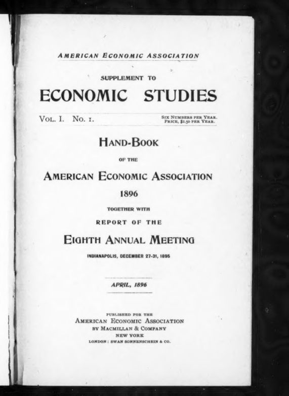

Walker, 1895: a quantidade de moeda decide a prosperidade?
Leitura: 7 min
Walker defende a teoria quantitativa, separa a inflação por decreto da inflação metálica e sustenta que a contração da moeda aumenta o peso das dívidas, corrói lucros e prolonga as crises.


Durante a Revolução Americana, lembra Francis A. Walker, o Congresso Continental substituiu a prata em circulação, talvez uns dezoito milhões de dólares, por papel de valor nominal superior a trezentos milhões. Todos concordaram que o excesso de quantidade fez os preços subirem até que o soldo de um coronel mal comprasse aveia para o cavalo. O episódio abre a série de casos históricos com que Walker, presidente do Massachusetts Institute of Technology, defende a teoria quantitativa da moeda.
O texto foi lido no simpósio sobre moeda e prosperidade da oitava reunião anual da American Economic Association, em Indianápolis, em 28 de dezembro de 1895, ao lado de um trabalho de Irving Fisher, e saiu na íntegra no nº 1 dos Economic Studies, em abril de 1896. O manual de 1896 o lista em primeiro lugar entre os ex-presidentes da associação.
Por que começar pela teoria quantitativa?
A primeira frase explica o método: a visão sobre a relação entre moeda e prosperidade depende da visão sobre a relação entre moeda e preços. Quem nega a teoria quantitativa não tem por que admitir que o volume do meio circulante afete a prosperidade. Walker reclama de que estava na moda negar ou menosprezar a doutrina e cita David A. Wells, que, diante de um aumento da moeda americana com preços em queda, perguntara como a teoria se harmonizava com os fatos. O mesmo Wells, nota, atribuíra à emissão a alta de preços do período dos greenbacks.
A história, diz, fala a favor da teoria. Ninguém duvidou de que a prata sul-americana dos séculos XVI e XVII causou a alta de preços; ninguém duvidou do papel-moeda continental, dos assignats franceses ou do ouro da Califórnia e da Austrália por volta de 1850. Só quando os preços caem alguém duvida. Além disso, a teoria seria apenas a aplicação à moeda do princípio geral de que o valor se determina pela oferta e pela procura. Caberia aos críticos mostrar por que esse princípio falharia justamente aqui, e ninguém, segundo Walker, mostrou o que governa os preços se não for a oferta e a procura de moeda.
Por que os preços sobem menos que a moeda?
A resposta está na cláusula “tudo o mais constante”. Os dados de câmaras de compensação e crédito, que os críticos invocavam, explicariam apenas por que a procura por moeda não é maior. Hábitos de uso do dinheiro mudam, e o próprio aumento da moeda pode criar demanda por ela. Walker cita Jacob, que estimara um aumento de cerca de 500% da moeda nas primeiras gerações após a descoberta da América, com alta de preços quase igual, e a revisão de Cliffe Leslie, que chegou a pouco mais de 200%. A diferença não refuta a teoria: a prata nova estimulou empreendimentos e produção, como mostrara Cairnes, e a produção maior absorveu parte do dinheiro novo.
Toda inflação é igual?
Não, e a distinção é o centro moral do texto. A inflação deliberada, por ato de governo, para elevar preços e reduzir dívidas, merece a mais grave condenação, por justiça social e por conveniência econômica. Walker compara a diferença entre ela e a inflação por novas minas à diferença entre a morte natural de um avarento, cuja herança passa a um herdeiro generoso, e o assassinato do avarento para mudar a propriedade dos seus bens.
“carrega consigo o ferrão da fraude” (It carries with it the sting of fraud)
A inflação metálica, que não carrega injustiça, Walker considera muito benéfica, mais do que admitiam os economistas de raciocínio a priori. Cita Hume: o dinheiro novo favorece a indústria no intervalo entre a sua chegada e a alta geral dos preços, porque chega primeiro às mãos de poucos que o empregam. E acrescenta o efeito sobre as dívidas: o mundo está sempre preso a obrigações herdadas, e um aumento natural da moeda alivia esse peso. Reforça com Chevalier, McCulloch, Jevons e Cairnes, para quem a prata americana até apressou a decadência do poder feudal.
O que a contração da moeda faz?
Walker aponta uma incoerência nos economistas que se diziam ortodoxos: os mesmos que viam males ilimitados na inflação do papel-moeda tratavam a contração como irrelevante. Cita Wells, para quem, se toda a moeda sumisse, haveria inconveniência, como sem as réguas e medidas, mas nem um acre a menos seria cultivado. Walker responde que a contração, absoluta ou relativa ao crescimento do comércio, aumenta de imediato o peso de todas as dívidas e encargos fixos, e que a margem de quem empreende com capital emprestado é estreita.
O mal principal, porém, estaria na queda dos preços. No sistema moderno, o único motivo para produzir é o lucro esperado. Um fabricante compra 200 mil dólares de material e paga 300 mil de salários esperando lucrar talvez 20 ou 25 mil; uma pequena queda de preços entre a compra e a venda pode apagar o lucro ou virá-lo em prejuízo. O terço inferior de cada ramo, que compra, produz e vende em desvantagem, é o primeiro a sofrer, e as suas falências desorganizam o mercado de bens e de empréstimos.
Há ainda as crises. Walker considera inevitável que períodos de produção estimulada alternem com depressões e sustenta que a tendência de queda dos preços torna as perturbações mais frequentes, mais severas e mais longas. Descreve o círculo vicioso: produtores reduzem a produção porque o consumo caiu, e o consumo segue baixo porque os trabalhadores, produzindo pouco, têm pouco para gastar. Com preços em queda, a confiança volta mais devagar. Ele resume com a imagem do nadador: pouca coisa no pescoço o leva ao fundo; pouca coisa sob os braços o mantém à tona por horas.
O crédito não compensa a falta de moeda?
Era o argumento mais comum da época. Walker responde com L. L. Price, presidente da seção de economia da British Association: o crédito obscurece a relação entre o metal e os preços, mas não a destrói, porque se expande e se contrai limitado pela base de dinheiro em que se apoia, por meio das reservas bancárias. Walker acrescenta uma dúvida própria: o crédito talvez seja menos ativo, e não mais, quando a moeda está em contração.
“a relação não é irreal porque é indireta” (the relation is not unreal because it is indirect)
Na minha leitura
Na minha leitura, a força do texto está na assimetria que ele denuncia: tratar a inflação como desastre e a deflação como indiferença é incoerente se a moeda importa. A ênfase no lucro esperado, nas dívidas nominais e na margem estreita do empresário marginal antecipa a forma como a economia monetária passou a pensar os custos da deflação.
O ponto fraco é o mesmo que Taussig levantou no debate: Walker não separa a queda de preços causada pela escassez de moeda da queda causada por ganhos de produtividade, que pode vir com rendas monetárias em alta. A distinção entre inflação por decreto e inflação por minas, por sua vez, é moral antes de ser econômica; os efeitos sobre devedores e credores dependem menos da origem do dinheiro novo que da surpresa com que ele chega.
Glossário
- Teoria quantitativa da moeda
- doutrina segundo a qual, tudo o mais constante, os preços variam com a quantidade de moeda.
- Assignats
- papel-moeda emitido na Revolução Francesa, lastreado em bens nacionalizados, que se desvalorizou rapidamente.
- Greenbacks
- papel-moeda de curso forçado emitido pelos Estados Unidos durante a Guerra Civil.
- Contração relativa
- situação em que a moeda não acompanha o crescimento do comércio, mesmo sem diminuir em termos absolutos.
- Câmara de compensação
- instituição em que bancos liquidam entre si cheques e saldos, reduzindo o uso de dinheiro.
Fontes
- The Relation of Changes in the Volume of the Currency to Prosperity — Francis A. Walker (Massachusetts Institute of Technology) (pp. 23–45). Internet Archive (número completo, PDF)
- Edição completa, com os demais artigos: ES 1 do Arquivo.
Documento em domínio público (EUA, publicado antes de 1931), via JSTOR Early Journal Content e Internet Archive. Resumo e comentário do autor deste site, sem afiliação com a American Economic Association. Encontrou um erro? Escreva: a correção é publicada no próprio texto, com data.
← Clark, 1895: o progresso econômico pode parar? ↑ ES 1 · Economic Studies nº 1: Clark, Walker e a reunião de Indianápolis